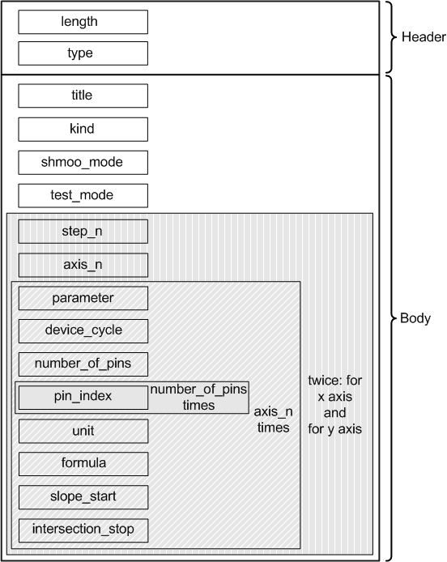

ShmooLegendAttrType
Contains the complete data defining a sweep test: title, kind, mode, and axis definition. The data type is DRLShmooLegendAttr.

Field Name |
Data Type |
Description |
Comments |
|---|---|---|---|
length |
int |
Attribute length |
These fields form the attribute header.
|
type |
short |
Attribute type |
|
title |
string |
Title |
|
kind |
int |
Shmoo kind |
|
shmoo_mode |
int |
Shmoo mode |
|
test_mode |
int |
Shmoo test mode |
|
step_n |
short |
Number of shmoo cells on this axis |
These fields form a block, which occurs twice, once for the x-axis and once for the y-axis. |
axis_n |
short |
Currently, this is always 1 |
|
parameter |
int |
Parameter |
|
device_cycle |
string |
Device cycle |
|
number_of_pins |
short |
Number of pins |
|
pin_index |
short |
Pin index, occurs as often as specified in number_of_pins |
|
unit |
string |
Unit |
|
formula |
short |
Formula |
|
slope_start |
double |
Slope start |
|
intersection_stop |
double |
Intersection stop |
Functional changes
- Introduced before SmarTest 6.3.2